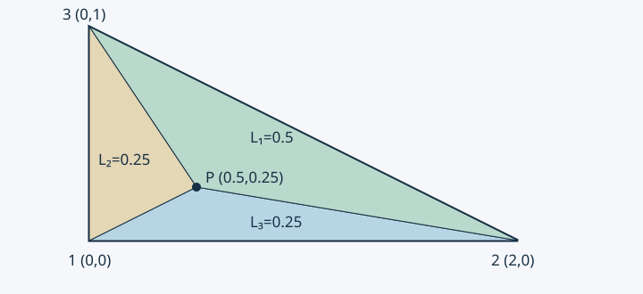

09 · 三角形单元与面积坐标#
课堂依据：2026.10.19 文件夹中照片 C01、C02、C03、C06、C07（三角形线性插值、行列式、面积坐标）；照片编号与文件名见来源覆盖。单元矩阵、二次三角形和手算例题为编写者解释补充。
为什么从矩形转向三角形#
矩形张量积插值很方便，但不规则边界未必能用规则矩形贴合。将多边形划分为三角形，便可在每个三角形上定义低次多项式，再通过共享边的节点值保持连续。曲边仍需几何近似或曲边单元，三角剖分并非自动精确表示曲线。
一个三节点三角形上，未知标量场用一次多项式
uh(x,y)=a+bx+cy
表示。a,b,c 是待定系数。一次二维多项式空间 P1=span{1,x,y} 维度是 3，因此三个不共线节点值恰好决定它。与 Q4 的 span{1,x,y,xy} 不同，不能给三节点单元再塞入第四个独立系数。
由节点条件解出形函数#
三个节点坐标为 (xi,yi)，节点场值为 ui，i=1,2,3。代入上式：
111x1x2x3y1y2y3abc=u1u2u3.
节点逆时针编号时，矩阵行列式等于 2A>0，其中 A 是面积。逆矩阵存在等价于三点不共线。将求出的系数代回并按 ui 收集，得到 uh=∑iNiui。
为避免逐次求逆，定义循环系数（i,j,k 依次取 (1,2,3),(2,3,1),(3,1,2)）：
ai=xjyk−xkyj,bi=yj−yk,ci=xk−xj.
于是
Ni(x,y)=2Aai+bix+ciy.
这里 ai,bi,ci 是几何已知量，区别于场近似的待定系数 a,b,c。量纲上分子、分母均为面积，Ni 无量纲。若换为顺时针编号，应一致使用有向行列式，或先重排节点，不能只对分母取绝对值而不改分子。
把节点 i 代入 Ni 得 1，代入另两节点得 0；这也是求形函数的一种方法：让每个形函数在自己的节点取 1，其他节点取 0。由此有 Ni(xj,yj)=δij。
面积比为什么就是线性形函数#
对三角形内一点 P，连接它与三个顶点，将面积分为 A1,A2,A3，其中 Ai 是与顶点 i 相对的子三角形面积。固定对边时，子三角形的底不变、高度随 P 的坐标线性变化，因而 Ai/A 也是线性函数。它在顶点 i 为 1，在另两个顶点为 0，和 Ni 满足同样的三个条件，故
Ni=Li=AAi,L1+L2+L3=1.

图中三个小三角形分别与三个顶点对应。只有点在内部时三个普通面积比均非负；外部延拓要用有向面积，不能继续把绝对面积比相加当作单位分解。
本版站点为纯静态构建，不提供可拖动的交互组件；上方静态图即为回退视图。示例三角形 (0,0),(2,0),(0,1)，内部点 (0.5,0.25) 的权重为 (0.5,0.25,0.25)，可据此核对三个权重之和保持为 1。
单位分解还说明常数场能精确恢复。更强地，∑iNixi=x,∑iNiyi=y，因此任意线性场都能精确插值。相邻三角形的公共边上，两个迹都是由相同两端值决定的一维线性函数，故整张网格的 uh 连续；梯度无需跨边连续。
梯度与常系数单元矩阵#
由于 Ni 线性，梯度为常向量：
B=2A1[b1c1b2c2b3c3],Ke=kABTB.
标量问题每节点一个自由度，所以 B 为 2×3，刚度为 3×3。常数源 f 有 fie=f∫eNidA=fA/3。该结果对应三个面积坐标积分相等且之和为面积。各向异性时用 ABTDB；变系数时不能直接提出 k，需计算积分。
手算一个非等边三角形#
取节点 (0,0),(2,0),(0,1)，面积 A=1，k=1。有
N1=1−x/2−y,N2=x/2,N3=y,B=[−1/2−11/2001].
因此
Ke=5/4−1/4−1−1/41/40−101.
取节点值 (1,3,2)，恢复 uh=1+x+y，梯度为 (1,1)T。直接积分能量为 ∫e∣∇uh∣2dA=2；矩阵计算 ueTKeue 也为 2。两个独立路径相同，能检查梯度、面积和矩阵维度。
高阶插值与三角形积分#
照片 C03 简短列出二维二次多项式，其完整空间为 span{1,x,y,x2,xy,y2}，维度 6。取三顶点和三个边中点，二次 Lagrange 形函数可由面积坐标写成顶点函数 Li(2Li−1) 与边函数 4LiLj。它有六个节点，区别于矩形 Q9 的九节点双二次空间。
为解析积分，非负整数 a,b,c 满足
∫eL1aL2bL3cdA=2A(a+b+c+2)!a!b!c!.
例如 ∫Li=A/3,∫Li2=A/6,∫LiLj=A/12（i=j）。可从参考三角形 ξ,η≥0,ξ+η≤1 的重复积分导出；仿射映射面积缩放为 2A。它是编写者补充工具，不代表照片已完整讲授高阶单元理论。
三角形太扁时 A 很小而边长不小，梯度系数可能很大，条件数与误差常数恶化。不能只靠细分数量评估网格质量。练习：检查 N1+N2+N3=1；将节点 2 移到 (ε,0) 时分析梯度变化；再学习材料界面。